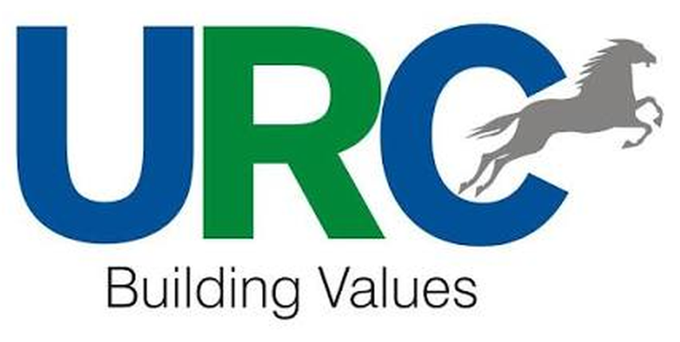

01
Daily ZIP Requests
Upload daily site request ZIP files and process document sets.

URC CONSTRUCTION PVT. LTD.MINS PERMIT STATUS TRACKEROne central workspace to manage daily site requests, vehicle documents and permit status — with clear visibility for your team and Head Office.
Simple workflows for site teams, users and Head Office monitoring.
Upload daily site request ZIP files and process document sets.
Review vehicles, Delivery Challans and E-Way Bills by Set.
Update permit numbers in the same row and track DONE or PENDING.
Access permitted documents and export operational reports.
The existing Google Apps Script application remains the engine for login, permissions and live permit data.
Google may restrict Apps Script from displaying inside another website. Your existing application and data remain available through the secure direct link.
Open secure URC application ↗Security note: GitHub hosts the website interface. User authentication, permit records and document permissions continue to be handled by the existing Apps Script application.